Part 3: Translation Behaviour¶
With the idiom inventory characterised, we now examine how Gemini 3.0 translates it. The analyses below ask: how long are translations, what fraction of them carries the idiom rendering, where in the sentence does the rendering appear, how different are the three strategies from each other, how lexically varied is the output, and does context actually change translations or are they largely templated?
Translation Length & Expansion Ratio¶
Translations are substantially longer than their source sentences across all strategies:
| Strategy | Median expansion ratio | Mean | Macro-mean (over idioms) |
|---|---|---|---|
| Creatively | 3.59× | 3.68× | 3.68× |
| Analogy | 4.46× | 4.60× | 4.60× |
| Author | 4.36× | 4.55× | 4.55× |
Wilcoxon signed-rank tests (one-sided, Creatively < Analogy/Author) are significant at p < 10⁻³⁰⁰ for every target language. Effect sizes (rank-biserial correlation r = 1 − 2T / (n(n+1)/2)) range 0.55–0.97, largest for Spanish and Russian in the Author strategy. The large expansion ratios reflect the fundamental challenge of idiom translation: the target must convey figurative meaning that the source sentence implies rather than states, requiring elaboration.
The contrast is sharpest when comparing idioms that map directly onto an English phrase versus those that encode a culturally specific concept with no ready equivalent. The Chinese 一言以蔽之 ("to cover it with one word") expands only 2.6× because Creatively can collapse the entire idiom into "In a word" or "All things considered" — the English phrase is the idiom. By contrast, 偃武修文 ("lay down arms, cultivate letters") expands 6.3× because no English shorthand exists: the model must construct a phrase like "laid down its swords to cultivate the arts of peace." The same pattern holds across source languages. Japanese 金科玉条 ("golden rules worth cherishing") yields a compact rendering — "the gospel for our team" (Creatively), "a most sacred canon" (Author) — while the filial gratitude idiom 寸草春暉 ("a blade of grass cannot repay spring's warmth") requires a full simile in every strategy: "a debt as vast as the sky is to a blade of grass." Korean 회자인구 ("on everyone's lips") collapses to "the talk of the town," whereas 남귤북지 ("citrus becomes trifoliate north of the Huai River," i.e. context shapes character) must be unpacked as "how a change in setting can turn a common shrub into a bearer of golden fruit" — a full explanatory clause.
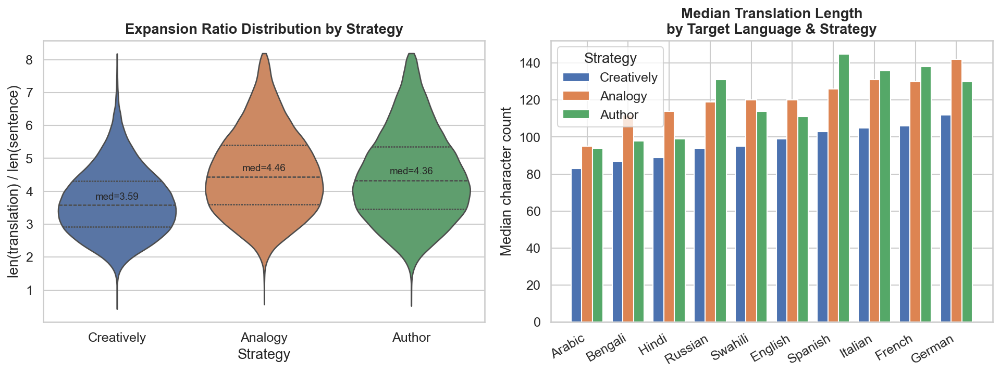
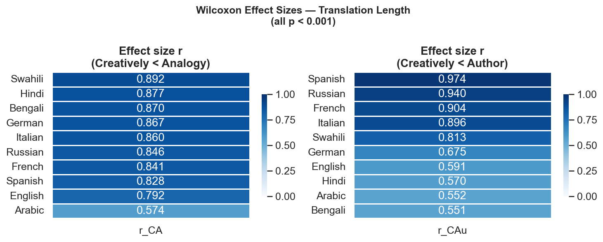
Span Length & Idiom Footprint¶
These long translations are not uniformly padded. The idiom span — the model's rendering of the idiom itself — occupies only a modest fraction of each translation:
| Strategy | Median span/translation ratio |
|---|---|
| Creatively | 0.274 |
| Author | 0.271 |
| Analogy | 0.362 |
Analogy produces substantially longer spans relative to the translation (0.36 vs 0.27), consistent with its design as an analogy-based strategy that elaborates the idiomatic substitution. Cross-strategy span length correlations are low (Pearson r ≈ 0.22–0.29), indicating that the three strategies render the idiom in very different surface forms even when overall translation lengths are similar.
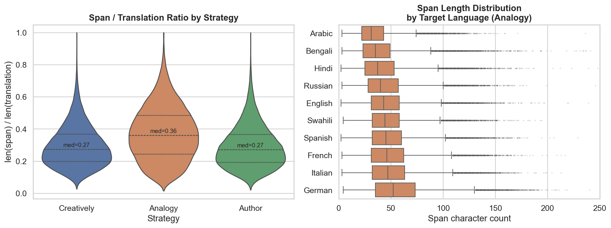
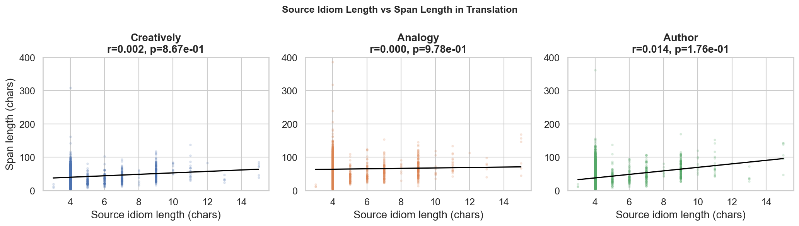
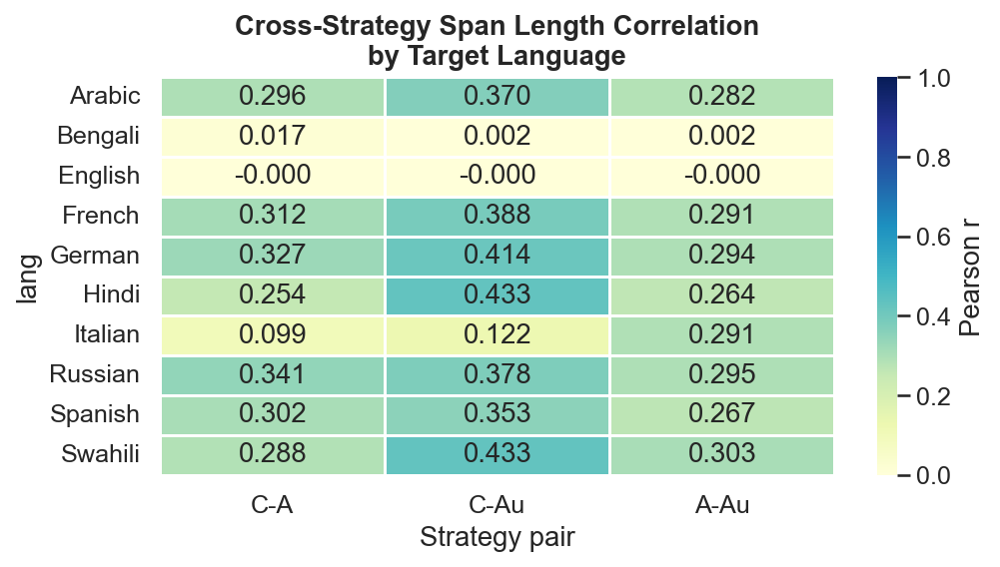
Span Position Within Translation¶
Beyond size, the position of the span within the translation reveals how sentences are
structured around the idiom rendering. Relative start position is computed as
start_offset / (translation_len − span_len), where 0 = span at the very start, 1 = at the
very end. Rows where the span is not found as a substring (~2% per strategy) are excluded.
| Strategy | Beginning (0–⅓) | Middle (⅓–⅔) | End (⅔–1) |
|---|---|---|---|
| Creatively | 29.9% | 29.1% | 41.0% |
| Analogy | 29.6% | 26.0% | 44.5% |
| Author | 30.2% | 29.6% | 40.3% |
Across all strategies the idiom span skews toward the end (~40–45% vs ~30% each for beginning and middle). This suggests the model tends to introduce context and build up to the idiomatic expression rather than leading with it — a rhetorical pattern consistent with how idiomatic expressions function as conclusions or punchlines in natural discourse.
South Asian languages (Bengali 0.478, Hindi 0.488) place the span earliest; Romance and Bantu languages place it latest (Italian 0.609, Swahili 0.612), reflecting word-order differences across target languages. Chinese and Korean sources produce later-positioned spans (~0.59) than Japanese (~0.54).
In English, the difference is particularly stark with grammatical-particle idioms versus narrative-conclusion idioms. The Chinese 总而言之 ("in summary") and Japanese 如是我聞 ("thus have I heard," a Buddhist formula for reported speech) and Korean 십상팔구 ("eight or nine out of ten") all function as sentence-initial adverbials, so the span must appear first: "When all is said and done, this plan stands as our premier path forward" / "Thus have I heard: the Master shall venture across the seas" / "Nine times out of ten, I have no one to blame but myself." By contrast, idioms used as final appraisals — Chinese 亡羊得牛 ("lose a sheep, gain an ox"), Japanese 塗炭之苦 ("suffering in mud and charcoal"), Korean 함흥차사 ("a messenger sent to Hamhung who never returns") — consistently appear at or near the sentence end: "losing a sheep ultimately gained him an ox" / "cast into a living hell of misery and despair" / "talk about a total swing and a miss." The span-position signal therefore partly reflects syntactic function rather than a free stylistic choice by the model.
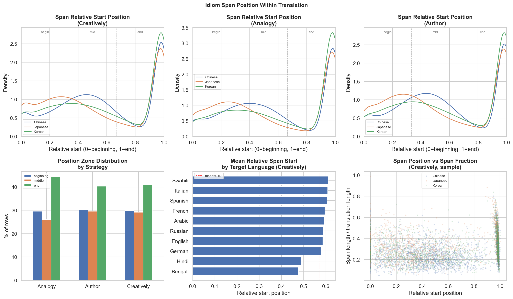
Strategy Divergence¶
The three strategies not only produce different span sizes and positions — their full translations are substantially different from each other:
| Pair | Mean unigram divergence | Mean normalised edit distance |
|---|---|---|
| Creatively → Analogy | 0.604 | 0.574 |
| Creatively → Author | 0.673 | 0.607 |
| Analogy → Author | 0.758 | 0.653 |
Analogy and Author diverge from each other more than either diverges from Creatively, suggesting Creatively occupies a middle ground. Divergence is highest for culturally specific idioms with no clear English equivalent and lowest for idioms with a ready conventional rendering — the model's three strategies converge when the answer is obvious and diverge when interpretation is required.
The clearest illustrations come from the low-divergence end. Chinese 非驴非马 ("neither donkey nor horse," i.e. nondescript hybrid) maps immediately onto the English "neither X nor Y" template, so all three strategies stay within that frame: "neither fish nor fowl" / "neither fish nor feather" / "neither ass nor horse." Japanese 広大無辺 ("vast and boundless beyond measure") is similarly transparent, and every strategy renders it with near-identical wording: "vast and boundless" / "so boundless" / "vast and boundless reach." At the high-divergence end, the Japanese 口耳四寸 ("the distance between ear and mouth," meaning superficial learning retained only briefly) produces three radically different metaphors: "flew from lip to ear before the breath could even cool" (Creatively), "within the span of a single heartbeat's echo" (Analogy), "hath o'erleapt the space 'twixt mouth and ear" (Author) — each strategy reaches for a different image because no English phrase captures the spatial metaphor of the original. Korean 회계지치 ("returning home exhausted") similarly fragments: "completely bone-tired" (Creatively, 2 words), "as though my internal battery had been replaced with a handful of cold, wet sand" (Analogy, a sprawling 20-word metaphor), "a most profound weariness of the spirit" (Author) — the strategies agree on the meaning but disagree on everything else.
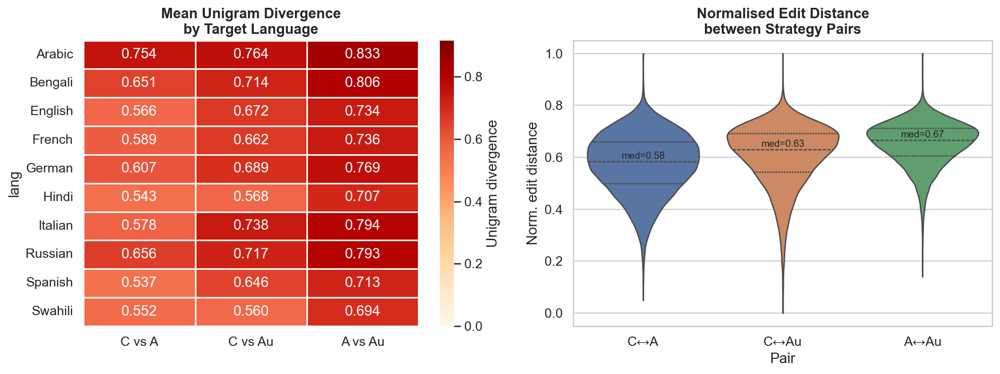
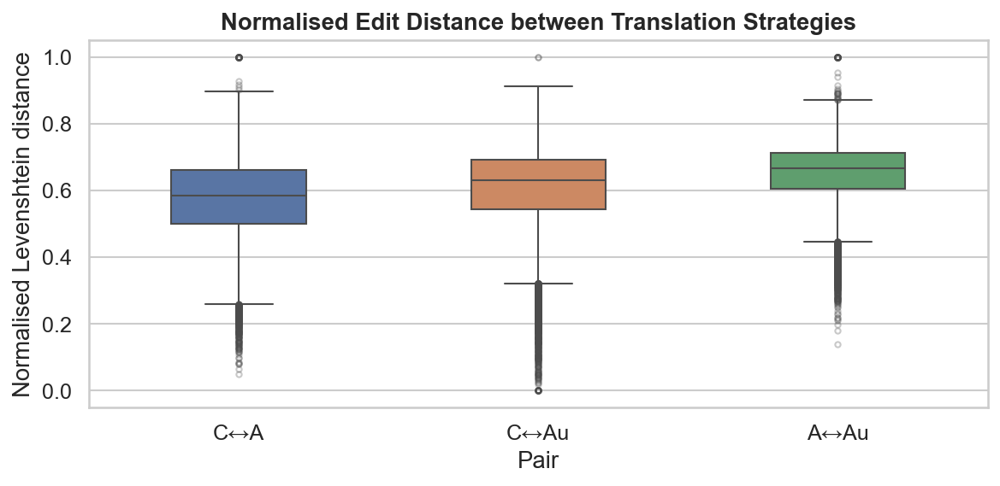
Lexical Diversity¶
Strategy divergence is also reflected at the vocabulary level. Type-token ratios of individual translations are very high (median ≈ 1.00 for Creatively, 0.957 for Analogy and Author), meaning individual translations are short enough that almost every word is unique. More informative is the span-level lexical breadth across all 10 target languages per idiom:
| Strategy | Mean unique unigrams in spans per idiom |
|---|---|
| Creatively | 280.5 |
| Author | 346.8 |
| Analogy | 512.9 |
Analogy produces nearly twice as many distinct span renderings as Creatively, confirming it is the most lexically inventive strategy. This is consistent with the strategy divergence results above: Analogy diverges most from the other strategies and also generates the widest span vocabulary. Span TTR correlates weakly but positively with full-translation TTR (ρ ≈ 0.15–0.25).
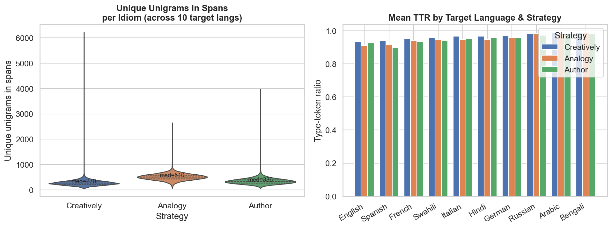
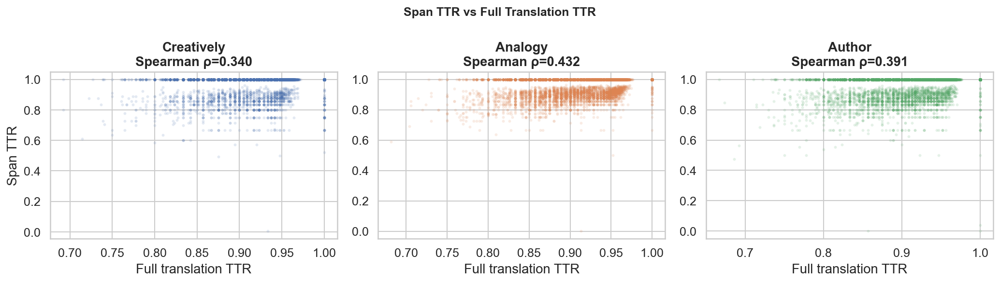
Context Sensitivity & Span Reuse¶
The analysis so far treats each row independently. But each (idiom, target language) cell contains 10 sentences — how much do translations within that cell vary? High within-cell variation means the model genuinely reads and uses context; low variation means it effectively ignores it and applies a fixed rendering.
Translation length variation (CV across 10 sentences):
| Strategy | Mean CV | Median CV | CV > 0.10 |
|---|---|---|---|
| Creatively | 0.206 | 0.201 | 98.7% |
| Analogy | 0.195 | 0.190 | 98.3% |
| Author | 0.219 | 0.213 | 99.0% |
98–99% of cells show non-trivial length variation — the model is consistently context-sensitive. Author is most sensitive (CV 0.219) and Analogy least (0.195), which mirrors their between-strategy divergence ordering. Word-level diversity within cells confirms the same picture: mean pairwise Jaccard between the 10 translations within a cell is ~0.08 — any two translations share about 8% of their combined vocabulary, confirming genuine lexical variation across sentences.
Span reuse across the 10 sentences:
| Strategy | All-different spans (10 unique) |
|---|---|
| Creatively | 62.3% |
| Analogy | 92.1% |
| Author | 76.4% |
Spans are overwhelmingly sentence-driven, not idiom-driven: in 62–92% of cells, every sentence produces a distinct span. Analogy's 92% fully-unique rate is the flip side of its high lexical diversity (see Lexical Diversity above) — it not only produces different vocabulary across target languages but also across sentences for the same target language. No cell achieves full convergence to a single fixed span, ruling out simple template-based annotation.
The span-reuse examples make this concrete. Analogy spans for Chinese 知过必改 ("know a fault, correct it") across 10 English sentences span a wide range of distinct metaphors: "treat his flaws like cracks in a dam," "prune his past actions like a gardener," "treat their mistakes like software bugs to be patched on sight" — every sentence prompts a fresh analogy. The same pattern holds for Japanese 南船北馬 ("south by boat, north by horse," i.e. constant travel): "dandelion seed chasing the four winds," "the restless wind and the tireless tide," "weaving his career across the map like a migratory needle stitching horizons together" — ten sentences, ten metaphors, none repeated. Korean 옥하가옥 ("jade below jade," i.e. excellence upon excellence) produces equally inventive variation: "sapphire eye watching over a kingdom of emeralds," "a lighthouse built atop a sun," "gilding a dragonfly's wings." By contrast, idioms that already have a fixed conventional English rendering lock in: Chinese 瓮中捉鳖 ("catching a turtle in a jar") produces "shooting fish in a barrel" for all 10 sentences without variation; Japanese 試行錯誤 yields "trial and error" nine times out of ten; Korean 죽림칠현 (the "Seven Sages of the Bamboo Grove") always renders as that exact proper noun. The distinction is between idioms that carry a vivid concrete image (inviting fresh analogies) and those that map directly to an established English phrase (forcing convergence regardless of context).
Context sensitivity varies across idioms in related ways. Chinese 千篇一律 ("a thousand pieces of identical prose," i.e. monotonous uniformity) produces three nearly identical English Creatively translations: "stuck in a rut," "cut from the same cloth," "cut from the exact same cloth" — the idiom's meaning is so directly expressed by a fixed English idiom that context barely matters. Chinese 罪魁祸首 ("chief culprit"), by contrast, ranges from a terse "He is the rotten heart of this corruption case" (3 words for the idiom itself) to "Everyone knows exactly whose hands are dirty in today's chaos" (no explicit idiom phrase at all) to a full clause about scapegoating in a financial crisis — the word "culprit" can take on very different emphases depending on domain and subject matter. Similarly, Japanese 問答無用 ("no questions permitted") ranges from "My word is final" (sentence-initial imperative context) to "They were forced into blind obedience, expected to follow the rules without question or recourse" (narrative third-person context) — the same idiom serves as either a blunt command or an elaborate explanation of authority. The Korean 경성지미, an obscure idiom, shows the highest context sensitivity of all, but for a different reason: lacking a stable meaning, the model latches onto different interpretations across sentences — "refined elegance," "the flavors of Gyeongseong," "the grit to grind a mirror from a stone" — illustrating how ambiguous or rare idioms induce not genuine context-sensitivity but semantic instability.
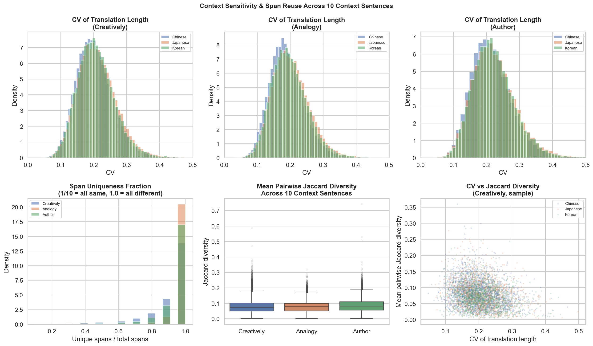